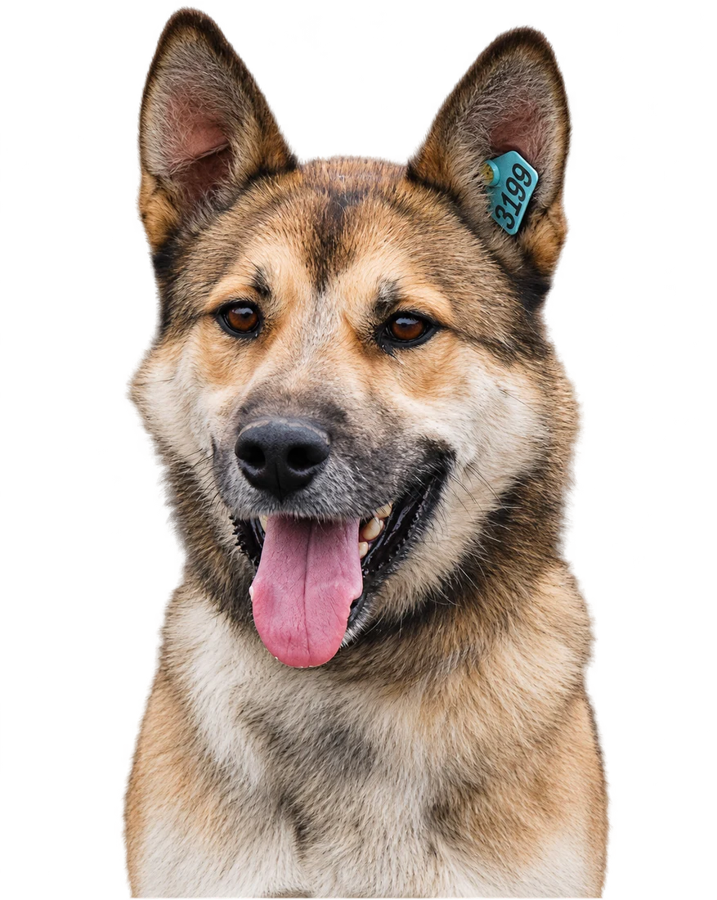

Новый друг ждёт вас
Как взять питомца
из приюта?
Мечтаете о верном друге? Возможно, он уже ждёт вас в нашем приюте. Рассказываем, как забрать собаку домой.
Бесплатно · по договору

Когда
Пн–сб, 13:00–15:00. Воскресенье — выходной.
Где
Омск, ул. 2-я Учхозная, 2А.
С собой
Паспорт, ошейник и поводок.
Шаг 01
Выберите будущего друга
Познакомьтесь с собаками на сайте или приезжайте в приют лично. Сотрудники помогут подобрать питомца с учётом ваших пожеланий и условий проживания.
Посмотреть собакНе знаете, кого выбрать?
Расскажите сотрудникам, какого друга вы ищете.
Шаг 02
Приезжайте знакомиться
Приходите с понедельника по субботу с 13:00 до 15:00.
По воскресеньям приют закрыт для посещений.
Субботние прогулки
Каждую субботу · 13:00–15:00
Можно пообщаться с собаками и лучше узнать их характер.
Не торопитесь с выбором. Узнайте у сотрудников о поведении, здоровье и привычках понравившейся собаки.
Шаг 03
Оформите документы
Чтобы забрать собаку домой, понадобятся:
- Паспорт — для заключения договора об ответственном содержании животного.
- Ошейник и поводок — для безопасной поездки домой.
Передача собаки — бесплатно
Собаки передаются стерилизованными и привитыми.
Первые дни в новом доме
Заранее подготовьте лежанку, миски, корм и игрушки. Уберите опасные предметы и позаботьтесь о безопасности дома.
Важно помнить
Переезд — большой стресс для собаки. Дайте ей время освоиться, не навязывайте общение и будьте терпеливы.
Самое главное
Подарите собаке любовь и заботу!
Необязательно искать идеальную собаку. Важнее найти ту, с которой вы станете настоящей командой. Возможно, именно здесь вас ждёт ваш друг.
Приезжайте знакомиться!
Пн–сб · 13:00–15:00 · Без записи
С собой: паспорт, ошейник и поводок